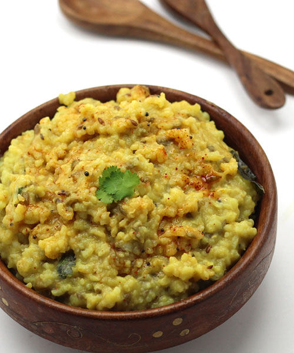

Vaghareli Khichidi
Description
It’s a simple rice and moong dal khichdi with aromatic tadka (tempering) of
garlic and few other spices. The aromatic tempering of garlic, mustard seeds,
cumin seeds and curry leaves adds an amazing flavor to khichdi making it a
perfect way to use the leftover plain khichdi. Vaghareli Khichdi (Vaghar is a
Gujarati word for tempering in English and tadka in Hindi) is a very popular
comfort food among people of Gujarat and is often known as Gujarati Khichdi.
Follow this step-by-step photo recipe to learn how to make a plain khichdi
even tastier if you are tired of eating your regular food and want to try
something new that is easy to prepare, homemade and healthy.
Ingredients
- 2/3 cup Rice (short grained)
- 1/3 Mixed Dal(split green gram with skin, split yellow lentils)
- 3 and 1/2 cups Water
- 1/8 teaspoon Turmeric Powder
- Salt to taste
For tadka
- 4-5 Garlic Cloves, chopped
- 1/4 Teaspoon Mustard Seeds
- 4-5 Curry Leaves
- 1/2 Teaspoon Red Chilli Powder
- 1 Teaspoon Cumin-Coriander Powder
- 1 Tablespoon Oil
Steps
-
Rinse rice and moong dal in water. Drain the water and transfer them
to a pressure cooker (3-5 liter capacity). Add 3½ cups water,
turmeric powder and salt. Mix well and taste the water for salt and
add more if required.
-
Close the lid and pressure cook for 4-whistles, cook on high flame
until first whistle is completed and then reduce the flame to medium.
Cook over medium flame for remaining three whistles. Turn off the
flame. Do not open the lid until pressure releases naturally (opening
the lid immediately will result in uncooked khichdi). Open the lid
after about 20 minutes and stir and mix the cooked khichdi with a
spoon or spatula.
-
Heat 1-tablespoon oil in a small tempering pan. When oil is medium
hot, add mustard seeds. When they start to pop, add cumin seeds,
chopped garlic cloves and curry leaves. When garlic starts to turn
light brown, turn off the flame (It will start to turn light brown
within 30-40 seconds). Add red chilli powder and cumin-coriander
powder and mix well.
-
Pour tempering (tadka/ vaghar) over cooked khichdi and mix with a
spoon. Vaghareli khichdi is now ready to serve. Enjoy it with plain
curd and papad.
Go back